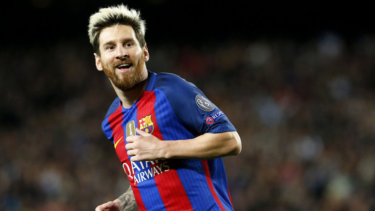

The Ultra Human

Lionel Andrés "Leo" Messi
Messi is an excellent, sensational, unique player. He is astoundingly creative, has amazing individual skill and is able to constantly put his rivals at unease. A natural left footer, he is stunningly versatile, and can play either in the middle or on whichever of the wings required, although it is out on the right that he feels most comfortable.
He may not be very tall, but his speed and physique enable him to cope with even the toughest of defenders. He is surprisingly strong, and can hold on to the ball in style, as if it were stuck to his feet. There is simply nobody like him anywhere else in the game. He is also a specialist at all dead ball situations, especially free kicks and penalties.
His cold blood and ability to take on responsibilities are other virtues that make Leo Messi simply the best footballer on the planet.
Winner:
La Liga (8): 2004-05, 2005-06, 2008-09, 2009-10, 2010-11, 2012-13, 2014-15, 2015-16
Copa del Rey (3): 2008-09, 2011-12, 2014-15, 2015-16
UEFA Champions League (4): 2005-06, 2008-09, 2010-11, 2014-15
Supercopa de España (6): 2005, 2006, 2009, 2010, 2011, 2013, 2016
UEFA Super Cup (3): 2009, 2011, 2015
FIFA Club World Cup (3): 2009, 2011, 2015
Runner-up:
La Liga* (2): 2011-12, 2013-14
Copa del Rey (2): 2010-11, 2013-14
Supercopa de España (2): 2012, 2015
UEFA Super Cup: 2006
Argentina
Winner:
Olympic Gold Medal: 2008
FIFA U-20 World Cup: 2005
Runner-up:
FIFA World Cup 2014
Copa América: 2007, 2015, 2016
Individual Awards
Barcelona:
La Liga All Time Top Scorer Honorary Golden Boot: 2015
FIFA Ballon d'Or (3): 2009, 2010, 2011, 2012, 2015
FIFA World Player of the Year: 2009
World Soccer Player of the Year (3): 2009, 2011, 2012
World Soccer Greatest XI of All Time: 2013
Onze d'Or (3): 2009, 2011, 2012
European Golden Shoe (3): 2010, 2012, 2013
UEFA Best Player in Europe Award: 2010-11, 2014-15
UEFA Club Footballer of the Year: 2009
UEFA Goal of the Season: 2014-15
FIFA Club World Cup Golden Ball (2): 2009, 2011
UEFA Champions League Top Goalscorer (5): 2009, 2010, 2011, 2012, 2015
UEFA Champions League Forward of the Year: 2009
AS.com La Liga Player of the Year: 2014-15
Trofeo Alfredo Di Stéfano (4): 2008–09, 2009–10, 2010–11, 2014-15
Don Balón Award (3): 2007, 2009, 2010
L'Équipe Champion of Champions: 2011
LFP Best Player (5): 2009, 2010, 2011, 2012, 2013
LFP Best Forward (5): 2009, 2010, 2011, 2012, 2013
La Liga Ibero-American Player of the Year (5): 2007, 2009, 2010, 2011, 2012
FIFPro World Young Player of the Year (3): 2006, 2007, 2008
World Soccer Young Player of the Year (3): 2006, 2007, 2008
Bravo Award: 2007
Golden Boy: 2005
Marca Legend Award: 2009
ESPY Awards Best International Athlete (2): 2012, 2015
El País King of European Soccer (4): 2009, 2010, 2011, 2012
IFFHS World's Top Goal Scorer (2): 2011, 2012
IFFHS World's best Top Division Goal Scorer (2): 2012, 2013
FIFA/FIFPro World XI (8): 2007, 2008, 2009, 2010, 2011, 2012, 2013, 2014, 2015
UEFA Team of the Year (6): 2008, 2009, 2010, 2011, 2012, 2014, 2015
ESM Team of the Year (7): 2006, 2008, 2009, 2010, 2011, 2012, 2013
Copa del Rey Top Goalscorer (2): 2010–11, 2013–14
Argentine Sportsperson of the Year Award: 2011
Olimpia de Plata (8): 2005, 2007, 2008, 2009, 2010, 2011, 2012, 2013
Gazzetta dello Sport Sportsman of the Year: 2011
Argentina:
2014 FIFA World Cup: Golden Ball (Best player)
2014 FIFA World Cup: Dream Team
FIFA U-20 World Cup Player of the Tournament: 2005
FIFA U-20 World Cup Top Goalscorer: 2005
Copa América Young Player of the Tournament: 2007
Copa América Top Assist Provider: 2011, 2015
Copa América Best Player: 2015
Records
World:
Most FIFA Ballon d'Or awards: 4
Guinness World Records title for the most goals in a year: 91 goals
Most consecutive European Cup top scorer awards: 4
Most Goals Scored in 1 UEFA Champions League Match (joint with Luiz Adriano): 2012
Most Hat-Tricks Scored in UEFA Champions League
Most Man of the Match Awards in a Single World Cup: 4 (2014)
Spain:
Most goals scored for a single club: 410 goals
Most goals scored in La Liga history: 286 goals
Most assists made in La Liga history: 113 assists
Most goals scored in La Liga in a season: 50 goals (2011-12)
Most consecutive La Liga matches scored in: 21 matches (33 goals)
Most La Liga hat-tricks in a season: 8 hat-tricks (shared with Cristiano Ronaldo)
Youngest player to score 200 La Liga goals: 25 years
First player to score at least 25 goals in five consecutive seasons in La Liga (shared with Cristiano Ronaldo): 2009–10 to 2013–14
First player to score at least 20 goals in six consecutive seasons in La Liga: 2008–09 to 2013–14
Most goals scored in El Clásico matches: 21 goals
Most hat-tricks in El Clásico matches: 2
Most goals scored in Derbi Barceloní: 12
Most goals scored in the Supercopa de España: 10 goals
Barcelona:
Most goals scored in El Clásico matches: 21 goals
Most goals scored in Derbi Barceloní: 12
Top scorer in official competitions: 397 goals
Top scorer in La Liga: 286 goals
Top scorer in UEFA Champions League: 77 goals
Top scorer in international competitions: 80 goals
Most hat-tricks in official competitions: 32 hat-tricks
Most hat-tricks in La Liga: 24 hat-tricks
Most away goals scored in Barcelona history in La Liga: 120 goals
Argentina:
Most goals scored in a year (national team): 12 goals (shared with Gabriel Batistuta)
Youngest Argentinian Player to have Scored in World Cup Finals:
18 years and 357 days